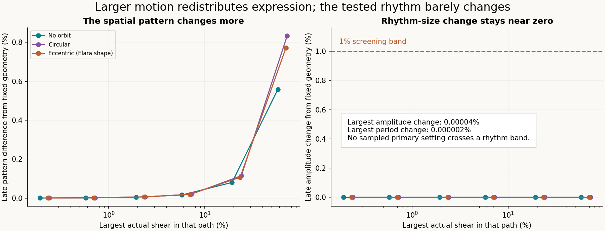
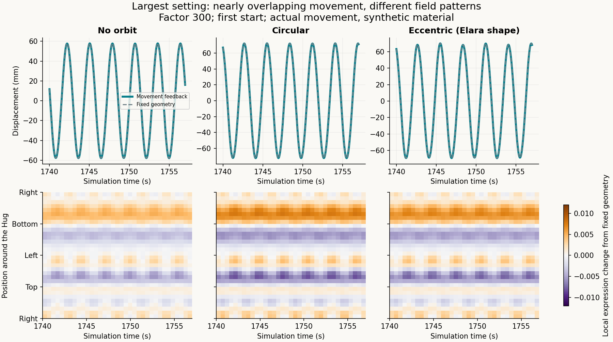
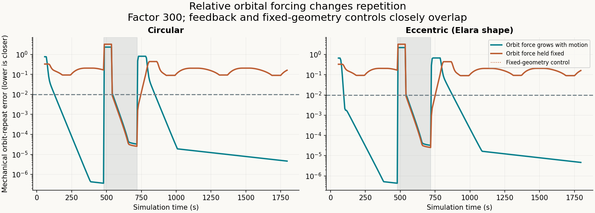
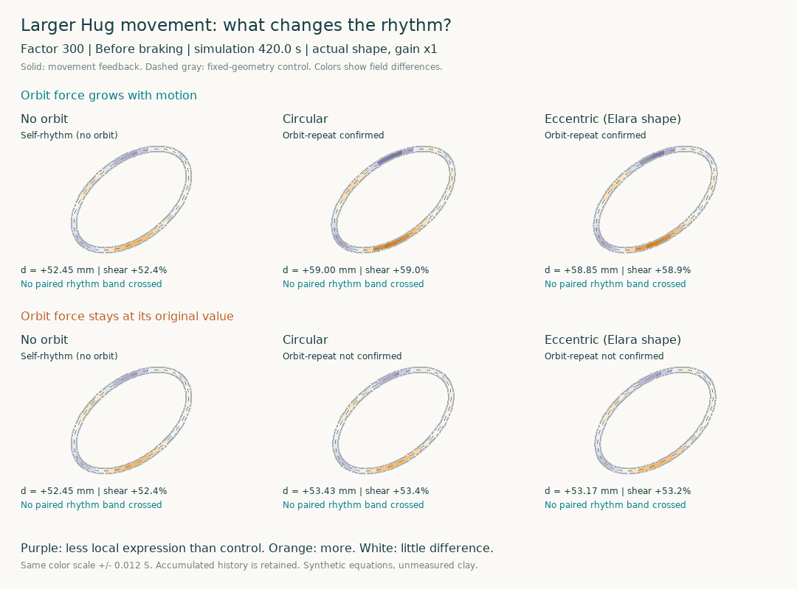

We tested the Hug without an orbit, with a circular orbit, and with an eccentric orbit. Actual simulated shear ranged up to 72.4%. Movement increasingly restructures the expressed field, while the stored history remains intact.
Play the comparisons · SciSpace-assisted testing structure · Equations and reproduction
The corpus accumulator and selected response are retained, but the capped source, relaxation, pair exchange and Burgers mechanics are additional modeling choices. The corpus does not supply a Girardian doubling law or derive the clay material law. Upper-region mimetic interaction remains a separate graded design intent.
See the specification register: what is assumed and what a full field simulation still needs.
We set screening bands before the sweep: 1% in amplitude or period, .05 cycle in phase, one orbit in recovery delay, or a changed orbit-repeat result. There were 0 flagged matched comparisons in the completed set. This means no tested setting crossed those bands; it does not mean every numerical difference was exactly zero.
In the primary sweep the largest amplitude difference was 0.00004% and the largest period difference was 0.000002%. Those tiny values should not be interpreted as physically measured precision.

For each movement setting we compare the declared movement-feedback surrogate with the same equations using fixed spatial operators. Sources, clay coefficients, spring and orbital clock are identical. Larger movement is created by a declared change to active saturation and starting displacement. In the primary family the orbital force grows in proportion; in a second family it stays fixed.

When orbital force stays fixed as self-motion grows, it becomes relatively weaker. A loss of orbital repetition in both paired models is therefore not evidence that memory feedback caused the loss. The plot below keeps this distinction visible.


The outlines use actual shear (gain ×1). Colors enlarge local field differences on a common ±.012 S scale; they do not show erased history. Clips jump between labeled windows of each saved trajectory. The outline is closed by its drawing map, not by a tested contact law.
SciSpace helped locate material-testing and synchronization research. The full structure links the primary papers and explains how each informed the design. It also records what remains untested.
Recovery numbers include the 57 s confirmation window. “Not confirmed” means unconfirmed by 949.5 s, before a separate input event. Both starts and every refinement are in results.json and summary.csv.
| Setting | Orbit force | Condition | Peak shear | Pattern difference | Amplitude return: fixed / feedback | Late orbit repeat | Paired rhythm bands crossed |
|---|---|---|---|---|---|---|---|
| 1 | Proportional | No orbit | 0.19% | 0.0005% | 224.5 s / 224.5 s | N/A | None |
| 1 | Proportional | Circular | 0.24% | 0.0006% | 57.0 s / 57.0 s | Yes | None |
| 1 | Proportional | Eccentric (Elara shape) | 0.23% | 0.0006% | 57.0 s / 57.0 s | Yes | None |
| 3 | Proportional | No orbit | 0.58% | 0.0015% | 224.5 s / 224.5 s | N/A | None |
| 3 | Proportional | Circular | 0.72% | 0.0018% | 57.0 s / 57.0 s | Yes | None |
| 3 | Proportional | Eccentric (Elara shape) | 0.70% | 0.0017% | 57.0 s / 57.0 s | Yes | None |
| 10 | Proportional | No orbit | 1.93% | 0.0050% | 224.5 s / 224.5 s | N/A | None |
| 10 | Proportional | Circular | 2.41% | 0.0061% | 57.0 s / 57.0 s | Yes | None |
| 10 | Proportional | Eccentric (Elara shape) | 2.34% | 0.0058% | 57.0 s / 57.0 s | Yes | None |
| 30 | Proportional | No orbit | 5.79% | 0.0159% | 224.5 s / 224.5 s | N/A | None |
| 30 | Proportional | Circular | 7.23% | 0.0200% | 57.0 s / 57.0 s | Yes | None |
| 30 | Proportional | Eccentric (Elara shape) | 7.03% | 0.0191% | 57.0 s / 57.0 s | Yes | None |
| 100 | Proportional | No orbit | 19.29% | 0.0803% | 224.5 s / 224.5 s | N/A | None |
| 100 | Proportional | Circular | 24.11% | 0.1147% | 57.0 s / 57.0 s | Yes | None |
| 100 | Proportional | Eccentric (Elara shape) | 23.43% | 0.1068% | 57.0 s / 57.0 s | Yes | None |
| 300 | Proportional | No orbit | 57.88% | 0.5582% | 224.5 s / 224.5 s | N/A | None |
| 300 | Proportional | Circular | 72.34% | 0.8327% | 57.0 s / 57.0 s | Yes | None |
| 300 | Proportional | Eccentric (Elara shape) | 70.28% | 0.7717% | 57.0 s / 57.0 s | Yes | None |
| 100 | Fixed | No orbit | 19.29% | 0.0803% | 224.5 s / 224.5 s | N/A | None |
| 100 | Fixed | Circular | 19.36% | 0.0809% | 79.0 s / 79.0 s | No | None |
| 100 | Fixed | Eccentric (Elara shape) | 19.35% | 0.0809% | 82.0 s / 82.0 s | No | None |
| 300 | Fixed | No orbit | 57.88% | 0.5582% | 224.5 s / 224.5 s | N/A | None |
| 300 | Fixed | Circular | 57.95% | 0.5587% | 92.0 s / 92.0 s | No | None |
| 300 | Fixed | Eccentric (Elara shape) | 57.93% | 0.5587% | 99.0 s / 99.0 s | No | None |
96 main trajectories and 204 refinement trajectories test the reduced model. Twenty equation tests and saved-data/player checks accompany the study. No physical clay or human measurements were added. The linear Burgers element has no identified yielding, damage or hydration mechanism; large synthetic shear is a stress test of its equations, not a validated prediction for your clay.
The conclusion is finite and conditional: within the tested settings and horizon, restructuring the field did not produce a noticeable paired rhythm change. There is no demonstrated movement threshold for that transition.